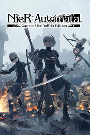

NieR Automata
Detalles
|  | |
| Tiempo de juego | No Jugado |
| Última actividad | Nunca |
| Añadido | 11/6/2024 14:41:31 |
| Modificado | 11/8/2024 17:34:44 |
| Estado de finalización | No Jugado |
| Librería | Playnite |
| Fuente | 6TB STORE |
| Plataforma | PC (Windows) |
| Fecha de lanzamiento | 3/17/2017 |
| Puntuación de la Comunidad | 86 |
| Puntuación de la Crítica | 84 |
| Puntuación de usuario | |
| Género | Acción Rol |
| Desarrollador | PlatinumGames Inc. Square Enix |
| Editor | Square Enix |
| Característica | Cloud Saves Compat. Parcial Con Mando Cromos De Logros De Préstamo Familiar Remote Play En Móvil Remote Play En Tableta Un Jugador |
| Enlaces | Punto de encuentro Discusiones Guías Noticias Página de la tienda PCGamingWiki Logros |
| Tag | Acción Ambientales Anime Aventura Buena trama Ciencia ficción Desnudez Gran banda sonora Hack and slash Juegos de acción de personajes Lluvia de balas Luchador espectacular Mundo abierto Posapocalípticos Protagonista femenina Robots Rol Rol japonés Un jugador Violentos |
Descripción

NieR: Automata narra la historia de los androides 2B, 9S y A2, que luchan para recuperar el mundo distópico dirigido por las máquinas que han invadido unas poderosas formas de vida mecánicas.
Unos alienígenas mecanizados han invadido la Tierra, obligando a la humanidad a abandonarla. En un último intento por recuperar el planeta, la resistencia humana envía un ejército de soldados androides para acabar con los invasores. La guerra entre las máquinas y los androides se vuelve cada vez más encarnizada. Una guerra que pronto pondrá al descubierto la verdad sobre este mundo...
Características principales:
- Combates cargados de acción: Alterna entre ataques a corta y larga distancia al enfrentarte a hordas de enemigos y desafiantes jefes en múltiples mapas de mundo abierto. Los controles de combate son fáciles de dominar para los neófitos y a la vez ofrecen una profundidad formidable para los jugadores más avanzados. Podrás ejecutar ofensivas a gran velocidad combinando ataques ligeros y pesados, y probar todo tu arsenal de armas mientras esquivas enemigos ágilmente.
- Un hermoso y desolado mundo abierto: El juego conecta los sobrecogedores paisajes y localizaciones fluidamente sin necesidad de carga. Los entornos se ejecutan a 60 fps y contienen un gran número de tramas secundarias además de la historia principal.
- Una historia y unos personajes muy cuidados: NieR: Automata narra la historia de los androides 2B, 9S y A2, que luchan enardecidamente para recuperar el mundo distópico dirigido por las máquinas que han invadido unas poderosas formas de vida mecánicas.
- Elementos de los juegos de rol: Consigue distintos tipos de armas, sube de nivel al luchar, aprende nuevas habilidades de combate y personaliza tu equipo en función de tu estilo.
- Aprovecha las vainas de apoyo táctico dentro y fuera del combate: Las vainas pueden atacar al enemigo de forma manual y automática. También pueden proporcionar ayuda fuera del combate, por ejemplo, para desplazarse por el aire. Es posible mejorar las vainas a lo largo del juego con nuevos ataques y modificaciones.
- MODO AUTO para principiantes: Los jugadores noveles pueden seleccionar el MODO AUTO para atacar y esquivar al enemigo fácilmente.